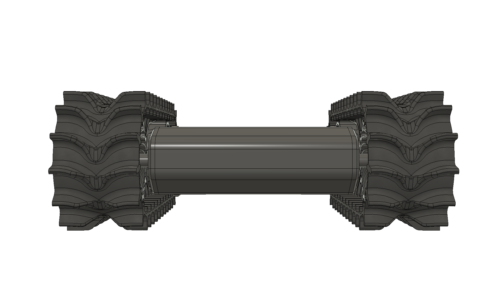

Mostly 3D printed tank drive platform. All printed components are designed to fit the common 220mm x 220mm x 250mm bed size.
Additional non-printed components include the electronics, motors, screws and bolts.
The chassis and sprockets are printed from Polyethylene terephthalate glycol-modified(PETG) for its durability and higher heat resistance compared to Polylactic acid(PLA).
Chassis interior provides space for additional electronics and sensors. (142mm x 140mm x 46mm)
Drive track designed with aggresive tread pattern for rough terrain. Large teeth provide better engagement with sprocket.
The track is printed from 95A shore hardness Thermoplastic polyurethane(TPU) so it remains pliable but not stretchy.

Symmetrical top and bottom allows operation even when flipped. ~25mm of ground clearance.
A compound planetary gearbox yields a compact and powerful drive system. The gearbox is driven by a brushless motor usually intended for flying racing drones.
Final gear ratio 19.753:1.
Dimensions